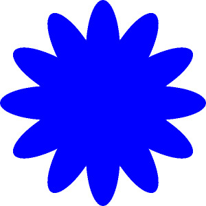

5 Wiederholungen in Python (For-Loops)

Eine Stärke von Computerprogrammen ist die wiederholte Ausführung von Anweisungen. Viele Programmiersprachen stellen dafür ein Konstrukt mit dem Namen ‘For-Schleife’ zur Verfügung. Eine ‘For-Schleife’ funktioniert unabhängig von einer konkreten Programmiersprache folgendermassen:
FÜR variable VON startwert BIS endwert [MIT schrittweite]
Anweisungen
ENDE FÜRÜbersetzt nach Python sieht das so aus:
startwert BIS endwert [MIT schrittweite] wird dabei durch range(n) ausgedrückt. Dabei ist n der Endwert. Gezählt wird bis zum aber ohne den Endwert. Startwert und Schrittweite haben Vorgabewerte. Der Vorgabewert für den Start ist 0, derjenige der Schrittweite 1. Weil range() diese vorgegebenen Werte hat, müssen diese nicht explizit angegeben werden. Wenn der Startwert abweichend vom Vorgabewert festgelegt werden soll, kann dieser explizit angegeben werden. Der Aufruf von range() sieht dann so aus:
Falls eine von 1 abweichende Schrittweite festgelegt werden soll lautet der Aufruf
In diesem Fall müssen neben dem Endwert sowohl der Startwert und die Schrittweite angegeben werden. Andernfalls kann nicht zwischen den einzelnen Angaben zu Endwert, Startwert und Schrittweite unterschieden werden.
5.1 Anwendungsübung zu Wiederholungen in Python
Im Folgenden bauen Sie eine Blume mit Python for-loops und PyTamaro.
In der folgenden Zelle werden zuerst alle von PyTamaro zur Verfügung gestellten Funktionen importiert.
Das Ziel ist es, eine Blume wie die abgebildete zu zeichnen.
Die wichtigsten Funktionen von PyTamaro für diese Aufgabe sind fixiere() und kombiniere().
Die Funktion fixiere() legt für eine Grafik einen frei gewählten Ankerpunkt fest. Dazu muss man wissen, dass jede in PyTamaro gezichnete Grafik von einer sogenannten “Bounding Box” umgeben ist. Diese Bounding Box ist ein Rechteck, das die Grafik vollständig umschliesst. Standardmässig liegt der Ankerpunkt einer Grafik in der Mitte der Bounding Box. Mit fixiere() kann man den Ankerpunkt jedoch an eine andere Stelle der Bounding Box verschieben. PyTamaro stellt die folgenden Positionen für Ankerpunkte zur Verfügung:
mitte: Mitte der Bounding Box (Standard)mitte_links: Mitte der linken Seite der Bounding Boxmitte_rechts: Mitte der rechten Seite der Bounding Boxoben_links: Obere linke Ecke der Bounding Boxoben_mitte: Mitte der oberen Seite der Bounding Boxoben_rechts: Obere rechte Ecke der Bounding Boxunten_links: Untere linke Ecke der Bounding Boxunten_mitte: Mitte der unteren Seite der Bounding Boxunten_rechts: Obere rechte Ecke der Bounding Box
Der Ankerpunkt wird mit dem Befehl fixiere(position, grafik) gesetzt.
Der Ankerpunkt ist wichtig für die Funktion drehe(), die eine Grafik um einen bestimmten Winkel dreht. Die Drehung erfolgt immer um den Ankerpunkt.
Die Funktion kombiniere(vordere Grafik, hintere Grafik) fügt zwei Grafiken zusammen. Die erste gegebene Grafik liegt im Vordergrund und die zweite im Hintergrund. Die Grafiken werden so ausgerichtet, dass ihre Ankerpunkte übereinanderliegen.
5.1.1 Schritt 1: Zerlege das Bild in seine Einzelteile
Die Blume besteht im wesentlichen aus zwei Formen:
- Blütenblätter in Form von Ellipsen sowie
- einer Scheibe in der Form eines Kreises in der Mitte.
Um die Blume zu zeichnen, müssen diese beiden Formen zuerst einzeln erstellt werden.
5.1.2 Schritt 2: Positioniere die Blütenblätter
Die Blütenblätter sind rund um die Mitte der Blume angeordnet. Da es zwölf Blütenblätter sind, beträgt der Winkel zwischen zwei Blütenblättern \(\frac{360°}{12} = 30°\). Die Drehung der Blütenblätter erfolgt um den Ankerpunkt unten_mitte der Blütenblätter.
Die Blütenblätter müssen also zuerst fixiert und dann gedreht werden.
5.1.3 Schritt 3: Zeichnen aller erforderlichen Blütenblätter
Die Blume hat zwölf Blütenblätter. Diese können von Hand jedes einzelne erstellt werden. Das dritte Blütenblatt ist um 60° gedreht und wird entsprechend mit
erstllt. Das kann man für alle zwölf Blütenblätter machen bis man beim zwölften Blütenblatt angekommen ist, das um 330° gedreht ist.
Das ist aber sehr mühsam und fehleranfällig. Viel einfacher ist es, eine Schlaufe (for-loop) zu verwenden, die die Blütenblätter basierend auf der Grundform automatisch erstellt.
for i in range(12):
winkel = i * 30
bluetenblatt_gedreht = drehe(winkel, bluetenblatt_fixiert)
zeige_grafik(bluetenblatt_gedreht)Diese Schlaufe durchläuft die Zahlen von 0 bis 11 (also 12 Zahlen) und berechnet für jede Zahl den entsprechenden Drehwinkel. Dann wird das Blütenblatt um diesen Winkel gedreht. Allerdings wird das gedrehte Blütenblatt in jeder Iteration der Schlaufe in der gleichen Variable bluetenblatt_gedreht gespeichert. Am Ende der Schlaufe enthält diese Variable nur das letzte gedrehte Blütenblatt (das um 330° gedrehte Blütenblatt).
5.1.4 Schritt 4: Kombiniere alle Blütenblätter
Um das unerwünschte Verhalten zu vermeiden, dass am Ende der Schlaufe nur das letzte gedrehte Blütenblatt in der Variable bluetenblatt_gedreht enthalten ist, müssen die gedrehten Blütenblätter in jeder Iteration der gewünschten Gesamtgrafik hinzugefügt werden. Dazu wird die Funktion kombiniere() verwendet.
blume = bluetenblatt_fixiert
for i in range(12):
winkel = i * 30
bluetenblatt_gedreht = drehe(winkel, bluetenblatt_fixiert)
blume = kombiniere(blume, bluetenblatt_gedreht)
zeige_grafik(blume)
Damit sind die Blütenblätter in der gewünschten Position und Anzahl zusammengefügt. Damit Sie allerdings aussehen, wie die Blume in der Vorlage, müssen die einzelnen Blütenblätter weiss eingefärbt und mit einem rosa Rand versehen werden.
Rosa ist keine vordefinierte Farbe in PyTamaro. Sie können jedoch eine beliebige Farbe mit der Funktion rgb_farbe(rot, gruen, blau) erstellen. Dabei sind rot, gruen und blau Zahlenwerte von 0 bis 255, die den Anteil der jeweiligen Farbe an der Gesamtfarbe angeben. Damit nicht alle Kombinationen durchprobiert werden müssen, können Sie mit einem Online-Tool wie RGB Color Picker die gewünschte Farbe auswählen und die entsprechenden Werte für rot, grün und blau ablesen.
weisses_blatt = ellipse(50, 150, weiss)
rosa_rand = ellipse(55, 155, rgb_farbe(255, 0, 102))
bluetenblatt_mit_rand = ueberlagere(weisses_blatt, rosa_rand)
zeige_grafik(bluetenblatt_mit_rand)Anschliessend können die Blütenblätter mit Rand in der vorher geschriebenen Schlaufe zur Gesamtgrafik zusammengefügt werden.
bluetenblatt_mit_rand_fixiert = fixiere(unten_mitte, bluetenblatt_mit_rand)
blume_weiss = bluetenblatt_mit_rand_fixiert
for i in range(12):
winkel = i * 30
bluetenblatt_gedreht = drehe(winkel, bluetenblatt_mit_rand_fixiert)
blume_weiss = kombiniere(blume_weiss, bluetenblatt_gedreht)
zeige_grafik(blume_weiss)5.1.5 Schritt 5: Scheibe im Zentrum der Blume
Bei genauer Betrachtung der Blume fällt auf, dass die Scheibe in der Mitte der Blume nicht einfach einfarbig gelb ist, sondern gegen die Mitte hin einen Farbverlauf aufweist. Diesen Farbverlauf wird erzeugt, indem mehrere Kreise mit kleiner werdendem Radius und abnehmender Farbintensität übereinandergelegt werden.
5.1.6 Schritt 6: Kombination der Elemente zur vollständigen Blume
Zum Schluss wird die Scheibe auf die Blütenblätter gelegt und Blume so vervollständigt.